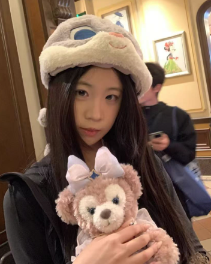

UI / UX
用户研究 / 信息架构 / 界面设计
梳理用户问题与核心链路，完成界面设计和高保真交付。
WANG ZENGZENG / DESIGN PORTFOLIO
一名关注数字体验与视觉表达的设计师。
在 UI / UX、视觉设计与 AIGC 之间探索，也用代码把想法带到网页上。
01 / ABOUT ME

我的设计实践涵盖产品界面、活动视觉与 AIGC 创作。通过真实项目，我持续学习如何理解需求、梳理信息，并把设计想法转化为具体的页面与内容。
EDUCATION / 教育经历
数字媒体技术
CORE CAPABILITIES
用户研究 / 信息架构 / 界面设计
梳理用户问题与核心链路，完成界面设计和高保真交付。
活动视觉 / 品牌延展 / 素材制作
围绕品牌与业务需求，完成活动视觉及多场景素材延展。
图像生成 / 提示词编写 / 工作流搭建
结合 AI 生图与后期精修，保持 IP 一致性，提升素材生产效率。
页面开发 / 响应式布局 / 交互实现
将设计转化为可浏览的网页，完成布局适配与基础交互。
ABOUT ME / IN PRACTICE
2026.03 — 2026.06
UI 实习设计师
参与桔子短租产品体验升级，协助梳理用户反馈与体验问题，围绕首页信息展示、房源筛选、列表与详情等场景开展 UI / UX 设计，并参与高保真页面落地。
参与项目：桔子短租升级项目 ↗2025.08 — 2026.01
UI / 视觉设计师
参与活动需求、玩法讨论与竞品分析，使用 Nano Banana、Gemini 等工具生成素材并完成二次处理。结合品牌调性进行喵莘莘 IP 延展，探索多尺寸适配，沉淀可复用的提示词与工作方法。
03 / BEYOND DESIGN
好好吃饭，也是认真生活。
3 张照片 · 点击放大收集一些让人开心的小可爱。
3 张照片 · 点击放大换个地方，看看不同的风景。
3 张照片 · 点击放大和毛茸茸的朋友待一会儿。
2 张照片 · 点击放大04 / GET IN TOUCH